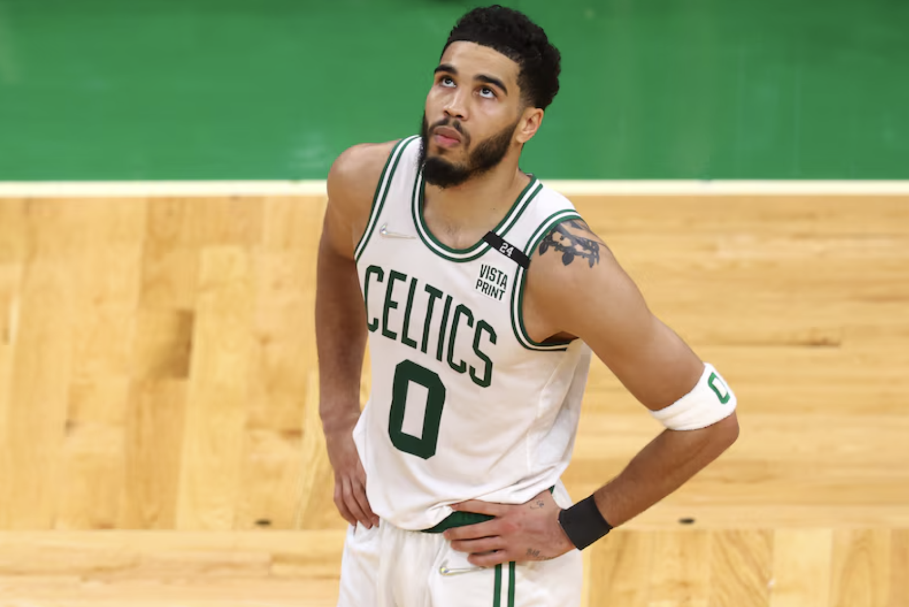

Key Players
Jayson Tatum (#0)
Position: Small Forward
Tatum is one of the best players in the entire NBA and a cornerstone of the Celtics franchise. He is a multi-time All-Star and All-NBA player.
Tatum's X: Contact Now

Official page for details regarding the Boston Celtics
100 Legends Way, Boston, MA 02114
Website: tdgarden.com
226 Causeway Street
Boston, MA 02114
United States
Monday to Friday: 8:30 AM to 5:00 PM
Closed on weekends along with major holidays
Position: Small Forward
Tatum is one of the best players in the entire NBA and a cornerstone of the Celtics franchise. He is a multi-time All-Star and All-NBA player.
Tatum's X: Contact Now
Position: Shooting Guard
Brown has been on the Celtics longer than any other teammate, and also just recieved finals MVP last season. He was named to the All-NBA Second Team and is a huge part of the team.
Brown's X: Contact Now
Position: Point Guard
A very unselfish player and an elite shooter, he also is one of the best defenders in the NBA. White is one of the fan favorites.
White's X: Contact Now
Position: Center
Nicknamed "The Unicorn" for his elite skills while being over 7 feet tall. Porziņģis is both excellent at shot-blocking and shooting 3's, which is uncommon for tall players.
Kristaps's X: Contact Now
Position: Point Guard
Jrue was signed to the Celtics last offseason and immediately became a key contributer due to his defensive abilities. Although an older player, his experience was very helpful in their finals run last year.
Jrue's X: Contact Now